기계설계산업기사 (2007-05-13 기출문제)
1과목: 기계가공법 및 안전관리
1. 그림과 같은 정면 밀링커터에서 엑시얼 경사각은?
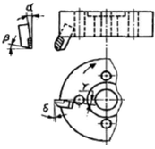
- α
- β
- r
- δ
(정답률: 48%)

2. 선반에서 일반적인 안전수칙으로 틀린 것은?
- 연속으로 생성되는 칩은 칩 제거용 기구를 사용하여 제거한다.
- 가동 전에 주유 부분에는 반드시 주유한다.
- 회전하고 있는 부분을 맨손으로 점검하는 것은 위험하므로 장갑을 끼고 점검한다.
- 선반이 가동될 때에는 자리를 이탈하지 않는다.
(정답률: 80%)
3. 벨트를 풀리에 걸 때는 어떤 상태에서 해야 안전한가?
- 저속 회전 상태
- 중속 회전 상태
- 플래노 밀러
- 회전 밀러
(정답률: 40%)
4. 밀링머신 종류 중 생산형 밀링 머신은?
- 수직 밀링 머신
- 수평 밀링 머신
- 플래노 밀러
- 세라믹
(정답률: 16%)
5. 산화알루미륨 분말에 Si 및 Mg 등의 산화물과 미량의 다른 원소를 첨가하여 고온에서도 경도가 높고 내 마멸성이 좋으며, 초경합금 보다 더욱 높은 속도로 절삭할 수 있으나, 취약 한 것이 결점인 공구재료는?
- 고속도강
- 스텔라이트
- 다이아몬도
- 세라믹
(정답률: 49%)
6. 빌트 업 에지(duiIt-up edge)의 방지 대책이 아닌 것은?
- 절삭 깊이의 증대
- 바이트 상면 경사각의 증대
- 절삭속도의 증대
- 적당한 윤활유의 사용
(정답률: 64%)
7. 센터리스(centerless) 연삭법의 장점이 아닌 것은?
- 대형 중량물의 연삭이 용이하다.
- 긴 축 재료의 연삭이 가능하다.
- 연속작업을 할 수 있어 대량 생산에 적합하다.
- 연삭 여유가 작아도 된다.
(정답률: 57%)
8. 연삭숫돌표시법의 WA-60-K-m-V에서 결합도를 나타내는 것은?
- WA
- V
- K
- m
(정답률: 75%)
9. 호빙 머신의 자동장치는 어느 경우에 가장 적합한가?
- 위엄기어를 절삭 가공할 떄
- 베벨기어를 절삭 가공할 때
- 헬리컬 기어를 절삭 가공할 때
- 치형을 정밀하게 완성 가공할 떄
(정답률: 40%)
10. 셰이퍼 가공에서 행정길이가 300mm, 절삭속도가 40/min, 절삭행정의 시간과 바이트 1왕복 시간의 비 k=0.6으로 했을 때, 바이트의 매분 왕복횟수는 얼마인가?
- 40
- 60
- 80
- 100
(정답률: 34%)
11. 절삭유의 사용목적으로 틀린 것은?
- 공구의 냉각
- 공작물의 냉각
- 칩의 제거
- 마찰계수 증가
(정답률: 74%)
12. 슈퍼피니싱의 특징 설명으로 틀린 것은?
- 원통형의 가공물 외면, 내면과 평면 등의 정밀 다듬질이 가능하다.
- 다듬질 된 면은 평활하고, 방향성이 없다.
- 입도가 비교적 크고, 경한 숫돌에 고압으로 가압하여 연마하는 방법이다.
- 가공에 의한 변질층의 두께가 매우 작다.
(정답률: 49%)
13. 직접 측정의 장점으로 틀린 것은?
- 측정기의 측정범위가 다른 측정법보다 넓다.
- 피측정물의 실제치수를 직접 읽을 수 있다.
- 눈금을 읽기 쉽고 측정시간이 적게 걸린다.
- 수량이 적고 종류가 많은 제품의 측정에 적합하다.
(정답률: 43%)
14. 선반가공에서 길이가 지름의 20배가 넘는 환봉을 절삭할 때 진동을 방지하기 위해 사용하는 부속장치는?
- 심봉(mandrel)
- 돌리개(dog)
- 방진구(Work rest)
- 돌림판(driving plate)
(정답률: 63%)
15. 그림과 같은 테이퍼를 선반에서 심압대를 편위시켜 절삭코자 한다. 심압대를 몇mm 편위시켜야 하는가?
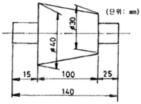
- 7
- 8
- 9
- 10
(정답률: 31%)
16. 밀링 머신의 일반적인 부속장치에 해당되지 않는 것은?
- 회전 테이블
- 슬로팅 장치
- 래크 절삭장치
- 브로칭 장치
(정답률: 38%)
17. 한계 게이지의 특징 설명 중 틀린 것은?
- 제품 사이의 호환성이 있다.
- 제품의 실제치수를 읽을 수 있다.
- 조작이 간단하므로 경험이 필요하지 않다.
- 1개의 치수마다 4개의 게이지가 필요하다.
(정답률: 32%)
18. 하이트 게이지(height gauge)에서 그 종류의 형(型)에 해당 되는 것은?
- HA형
- HB형
- HC형
- HD형
(정답률: 40%)
19. 직립드릴링 머신의 크기에서 스윙을 나타내는 것은?
- 컬럼의 중심부터 주축 표면까지 거리의 3배
- 주축의 중심부터 컬럼 표면까지 거리의 3배
- 컬럼의 중심부터 주축 표면까지 거리의 2배
- 주축의 중심부처 컬럼 표면까지 거리의 2배
(정답률: 29%)
20. 액체 호닝에 대한 특징 설명 중 틀린 것은?
- 공작물 표면의 산화막이나 거스러미(burr)를 제거하기 쉽다.
- 피닝 효과가 있다.
- 형상이 복잡한 것도 쉽게 가공한다.
- 가공시간이 길다.
(정답률: 52%)
2과목: 기계제도
21. 일반적인 스케치 작업 중 재질 판정법이 아닌 것은?
- 색깔이나 광택에 의한 법
- 피로 시험에 의한 법
- 불꽃 검사에 의한 법
- 경도 시험에 의한 법
(정답률: 23%)
22. 선의 용도가 지시사항, 기호 등을 표시하기 위하여 끌어내는데 쓰이는 선의 명칭은?
- 기준선
- 특수 보조선
- 지시선
- 특수 용도선
(정답률: 70%)
23. 다음 중 KS 도면의 크기에 대한 일반적인 원칙 설명으로 틀린 것은?
- A0 크기는 841×1189이다.
- 윤곽선은 0.5mm 이상 굵기의 실선으로 그린다.
- 도면의 세로와 가로의 비는 1: √2이다.
- 도면을 접을 때 그 접음의 크기를 A5로 기준 삼는다.
(정답률: 58%)
24. 핸들이나 바퀴 아암 및 리브, 훅, 축 등의 단면을 나타내는 도시법으로 적합한 것은?
- 회전 단면
- 계단 단면
- 부분 단면
- 한쪽 단면
(정답률: 74%)
25. 구멍의 치수가
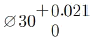
, 축은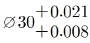
인 끼워 맞춤이 있다. 이 끼워 맞춤의 최대 죔새는?- 0.042
- 0.021
- 0.029
- 0.008
(정답률: 64%)
26. 보기와 같은 기하공차 도시 기호의 설명으로 가장 적합한 것은?
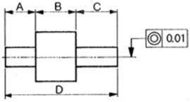
- A부분 동심도
- B부분 동심도
- C부분 동심도
- D부분 동심도
(정답률: 71%)
27. 보기와 같은 표면 거치기 지시기호에서 λc2.5의 값은 다음 중 어느 값인가?
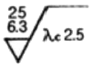
- 컷 오프 값
- 거칠기 지시 값 상한값
- 최대 높이 거칠기 값
- 거칠기 지시 값 하한값
(정답률: 62%)
28. 구름 베어링의 안지름이 25mm일 때 실제 안지름 대신에 표시하는 베어링의 안지름 번호는?
- 00
- ⑤
- 25
- 50
(정답률: 68%)
29. 다음 그림에서 A의 치수는 얼마인가?
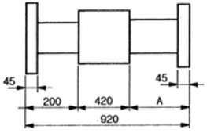
- 210
- 255
- 275
- 300
(정답률: 75%)
30. 다음 그림을 전개하였을 때 전개도의 중심각이 120°가 되려면 L의 치수는 얼마인가?
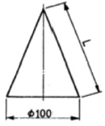
- 150mm
- 200mm
- 120mm
- 180mm
(정답률: 36%)
31. 보기와 같은 3각 정투상 도면의 입체도로 가장 적합한 것은?
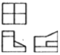
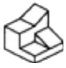
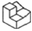
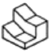
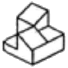
(정답률: 74%)
32. 보기 입체도의 화살표 방향 투상도로 가장 적합한 것은?
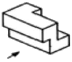
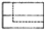
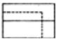
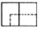
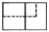
(정답률: 72%)
33. 보기와 같은 입체도를 제 3각법으로 정투상한 투상 도면으로 가장 적합한 것은?
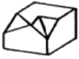
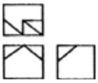
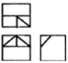
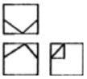
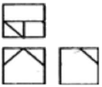
(정답률: 69%)
34. 보기에서 화살표 방향이 정면일 경우 우측면도로 가장 적합한 투상도는?
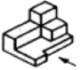
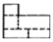
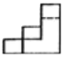
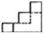
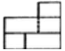
(정답률: 57%)
35. 리벳이음 도면에 열간 접시 머리 리벳 20×50 SV34로 표시된 경우 올바르게 설명된 것은?
- 리벳재료는 알 수 없다.
- 리벳 길이가 34mm이다.
- 리벳 지름이 20mm이다.
- 리벳 개수가 50개 이다.
(정답률: 52%)
36. KS 규격의 기계제도에서아라비아 숫자의 크기는 높이로서 정하고 있다. 다음 중 이에 포한되지 않는 것은?
- 9mm
- 6.3mm
- 4.5mm
- 3mm
(정답률: 11%)
37. 코일 스프링의 제도에서 스프링 도면 아래 요목 표에 기입하지 않는 것은?
- 코일 평균지름
- 총 감김 수
- 스프링의 종횡비
- 재료의 지름
(정답률: 27%)
38. KS 규격 구름 베어링 제도의 상세한 간략 도시방법으로 복렬 자동 조심 볼 베어링을 상세한 도시방법에 의하여 도시한 것은?
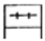
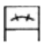
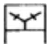
(정답률: 53%)
39. 줄무늬 방향 기호 중에서 가공에 의한 커터의 줄무늬가 여러 방향으로 교차 또는 무 방향으로 래핑 다듬질 한 면등의 기호는?
- =
- X
- M
- C
(정답률: 62%)
40. 다음 중 나사의 종류를 표시하는 기호가 잘못 설명 된 것은?
- 미터가는 나사: M
- 유니파이 보통나사;UNC
- 유니파이 가는나사: UNF
- 30도 사다리꼴 나사: TW
(정답률: 62%)
3과목: 기계설계 및 기계재료
41. 다음 중 양은(洋銀)의 주요 구성 성분은?
- Cu-Ni-Fe
- Cu-Ni-Zn
- Cu-Ni-Mg
- Cu-Ni-Pb
(정답률: 37%)
42. 구리(Gu)의 성질을 설명하였다. 옳지 않은 것은?
- 황산, 염산에 대한 내식성이 크다.
- 전기전도율과 열전도율은 금속 중에서 은(Ag) 다음으로 높다.
- 연성과 전성이 풍부하다.
- Ni, Sn, Zn 등과 합금이 잘 된다.
(정답률: 47%)
43. 담금질 조직 중 가장 경도가 높은 것은?
- 펄라이트
- 마텐자이트
- 솔바이트
- 트루스타이트
(정답률: 75%)
44. 다음 원소 중 중금속이 아닌 것은?
- Fe
- Ni
- Mg
- Cr
(정답률: 59%)
45. 황동계 실용 합금인 톰백에 관한 설명으로 틀린 것은?
- 8~20%의 Zn을 함유하는 황동이다.
- 색깔이 금색에 가까워서 모조금으로 사용된다.
- 전연성이 나쁘다.
- 냉간가공이 쉽다.
(정답률: 64%)
46. 비중이 1.74로서 실용 금속재료 중 가장 가볍고, 열전도율과 전기 전도율은 Cu, Al보다 낮고 강도는 작으나 절삭성이 좋은 비철 금속은?
- Zn
- Mg
- Si
- Ni
(정답률: 50%)
47. 담금질한 강에 A1, 변태점 이하의 열을 가하여 인성을 부여하고 기계적 성질의 개선을 하고자 하는 열처리는?
- 뜨임
- 질화법
- 불림
- 침탄법
(정답률: 46%)
48. 성형이 어려운 텅스텐 등과 같은 고온용 신소재에 소결법으로 가장 적절한 것은?
- 분말야금법
- 주조법
- 용접법
- 압연법
(정답률: 34%)
49. 보기 중에서 재료의 물리적 성질들 만으로 짝지어진 것은?
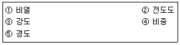
- ①, ②, ④
- ①, ②, ③
- ②, ③, ④
- ①, ②, ⑤
(정답률: 35%)
50. Fe-C 상태도에서 공석반응을 일으키는 온도는 약 몇 도인가?
- 521℃
- 621℃
- 723℃
- 821℃
(정답률: 54%)
51. 지름 20mm, 피치 2mm인 2줄 나사를 10회전 시켰더니 완전하게 체결되었다. 이 나사의 리드(lead)응 몇 mm인가?
- 20
- 40
- 4
- 2
(정답률: 36%)
52. 4ton의 축 방향 하중과 비틀림이 동시에 작용하고 있을 때 다음 중 가장 적합한 체결용 미터 보통나사 호칭은? (단, 허용 인장응력은 4.8kgf/mm2이고, 비틀림 응력은 수직응력의 1/3 정도로 본다.)
- M 58
- M 48
- M 84
- M 64
(정답률: 42%)
53. 다음 중 보스와 축을 고정하는 데 주로 쓰이고, 축에 끼워진 기어나 폴리의 위치 조정 및 키의 대용으로 쓰이며, 끝이 담금질 되어 있어 마찰, 걸림 등에 의한 정지 작용도 할 수 있는 나사로 가장 적합한 것은?
- 육각 볼트
- 태핑 볼트
- 작은 나사
- 멈춤 나사
(정답률: 56%)
54. 그림과 같은 기어 트레인에서 기어 A, B, C의 잇수를 각각 32, 15, 64라 하고 A 기어의 회전수가 1600rpm이라면 C기어의 회전수는 약 몇 rpm인가?
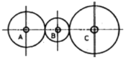
- 800
- 1600
- 2400
- 3200
(정답률: 38%)
55. V-벨트 전동장치에 대한 장점을 설명한 것 중 틀린 것은?
- 지름이 작은 풀리에도 사용할 수 있다.
- 바로 걸기 보다 엇걸기로 하여야만 한다.
- 마찰력이 평 벨트보다 크고, 미끄럼이 적어 비교적 작은 장력으로 큰 회전력을 전달할 수 있다.
- 이음매가 없어 운전이 정숙하다.
(정답률: 54%)
56. 금속 분말을 가압ㆍ소결하여 성형한 뒤 윤활유를 입자 사이의 공간에 스며들게 한 것으로 급유가 곤란한 곳 또는 급유를 하지 않은 곳에 사용하는 베어링은?
- 오일리스 베어링
- 니들 베어링
- 앵글러 볼 베어링
- 롤러 베어링
(정답률: 70%)
57. 다음 중 기계 등을 콘크리트 바닥에 설치하는데 사용되는 볼트의 명칭은?
- 스테이트볼트
- 아이볼트
- 충격볼트
- 기초볼트
(정답률: 59%)
58. 응력-변형률 선도에서 재료가 견딜 수 있는 최대의 응력을 무엇이라 하는가?
- 비례한도
- 소성변형
- 항복점
- 극한강도
(정답률: 57%)
59. 중앙에 구멍이 있고 원추형 모양이며, 병렬 또는 직렬로 조합하여 강성을 쉽게 조정할 수 있으며, 프레스의 완충장치, 공작기계 등에 쓰이는 스프링은?
- 토션 스프링
- 판 스프링
- 태엽 스프링
- 접시 스프링
(정답률: 14%)
60. 바깥지름 d=104mm, 잇수 z=50인 표준 스퍼 기어의 모듈은 얼마인가?
- 5
- 2
- 3
- 4
(정답률: 62%)
4과목: 컴퓨터응용설계
61. 리프레시(refresh) CRT에서 화면이 흐려지고 밝아지는 현상이 반복되는 과정에서 화면이 흔들리는 현상을 나타내는 용어는?
- 증폭
- 굴절
- 플리커
- 레지스터
(정답률: 64%)
62. CRT 화면상에서 도형이나 화상을 구성하는 화점 요소로서, 화면상에 가로와 세로로 각각 등 간격으로 위치하며 스크린의 해상도를 결정하는 요소를 무엇이라 하는가?
- PlXEL
- PART
- PITCH
- PICK
(정답률: 74%)
63. CAD 시스템 출력 장치가 아닌 것은?
- 플로터
- 프린터
- 디스플레이
- 조이스틱
(정답률: 71%)
64. 회전형 가변저항기를 X축과 Y축 방향으로 회전시켜 커서를 이동시키는 기구로 정확한 위치 선택이 용이하며, 주로 키보드와 같이 부착되어 있는 입력장치는?
- 썸 휠
- 라이트 펜
- 디지타이저
- 푸시 버튼
(정답률: 43%)
65. CAD 시스템의 입력 장치 중 미리 작성된 문자나 도형의 이미지 입력에 적당한 장치는?
- 프린터
- 키보드
- 스캐너
- 썸 휠
(정답률: 64%)
66. 미국의 표준코드로 컴퓨터와 주변 장치 간의 데이터 입ㆍ출력에 주로 사용하는 데이터 표현방식은?
- DECLMAL
- BCD
- EBCDIC
- ASCII
(정답률: 61%)
67. 다음 중 CPU에 대한 설명으로 옳지 않은 것은?
- 컴퓨터를 사용하기 위해서는 CPU가 없어도 된다.
- CPU는 중앙처리장치라고도 한다.
- CPU는 입력된 자료를 연산하는 기능을 갖고 있다.
- CPU는 연산 된 자료를 특정장소에 보내는 기능을 갖고 있다.
(정답률: 74%)
68. 다음 CAD 명령어 중에서 2차원 형상에서는 선대칭을, 3차원 형상에서는 면대칭을 나타내는 것은?
- Scaling
- Rotation
- Mirror
- Translation
(정답률: 67%)
69. 컴퓨터의 통신속도를 나타내는 단위는?
- BPI
- BPT
- MIPS
- BPS
(정답률: 49%)
70. 제한된 일정 지역 내에 분산 설치된 각종 정보 장비들 사이의 통신을 수행하기 위하여 최적화하고 신뢰선 있는 고속의 통신 채널을 제공하는 것은?
- 부가가치 통신망
- 현대역 종합 정보 통신망
- 근거리 통신망
- 광대역 종합 정보 통신망
(정답률: 58%)
71. 일반적인 CAD 시스템에서 원호를 정의하는 방법을 설명한 것이다. 틀린 것은?
- 두 점과 중심점이 주어질 때
- 중심점, 한 점과 현의 길이가 주어질 때
- 중심점, 각도, 시작점이 주어질 때
- 중심점과 반지름이 주어질 때
(정답률: 32%)
72. 그림과 같은 방식으로 3차원 형상을 구성하는 모델링 방식은 무엇인가?
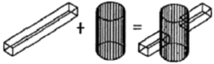
- B-rep modeling
- wire-frame modeling
- surface modeling
- CSG modeling
(정답률: 32%)
73. 3차원으로 형상을 표현할 때 형상의 모서리(edge)선 만을 이용해서 표현하는 모델링 방법은?
- solid 모델
- surface 모델
- wire frame 모델
- system 모델
(정답률: 62%)
74. 다음 중 원점을 중심으로 하고 반지름이 r인 원의 방정식은?
- x2+y2=r2
- x2+y2+Ax+By+C=0
- (x-a)-(y-b)=r
- x1x+y1y=x12+y12
(정답률: 53%)
75. 다음 중 지정된 모든 점을 통과하면서 부드럽게 연결한 곡선은?
- spline 곡선
- Bezier 곡선
- B-Spline 곡선
- NURBS 곡선
(정답률: 66%)
76. 평면상에서 직교좌표계의 기준 직교축의 원점에서부터 점 P까지의 직선거리(r)와 기준 직교축과 그 직선이 이루는 각도(θ)로 표시되는 좌표계를 무엇이라고 하는가?
- 절대좌표계
- 극좌표계
- 원통좌표계
- 구면좌표계
(정답률: 54%)
77. 다음 중 와이어 프레임 모델을 서피스 모델이나 솔리드 모델과 비교할 때 특징으로 잘못 설명한 것은?
- 저장되는 정보의 양이 적다.
- 은선 제거가 가능하다.
- 단면도 작성이 불가능하다.
- 처리속도가 빠르다.
(정답률: 53%)
78. 3차원 형상의 솔리드 모델링에서 B-rep과 비교한 CSG(constructive solid geometry)의 상대적인 특징으로 틀린 것은?
- 데이터의 구조가 간단하다.
- 데이터의 수정이 용이하다.
- 전개도의 작성이 용이하다.
- 메모리의 용량이 소용량이다.
(정답률: 48%)
79. 서피스 모델(surface model)의 특징이 아닌 것은?
- 체적등 물리적 성질의 계산이 가능하다.
- 2개면의 교선을 구할 수 있다.
- NC 가공 정보를 얻을 수 있다.
- 은선 제거가 가능하다.
(정답률: 67%)
80. 다음 중 불연산법에 의해서 가장 원활하게 모델을 구성할 수 있는 방식으로 적합한 것은?
- 와이어 프레임 모델
- 서피스 모델
- 시스템 모델
- 솔리드 모델
(정답률: 49%)